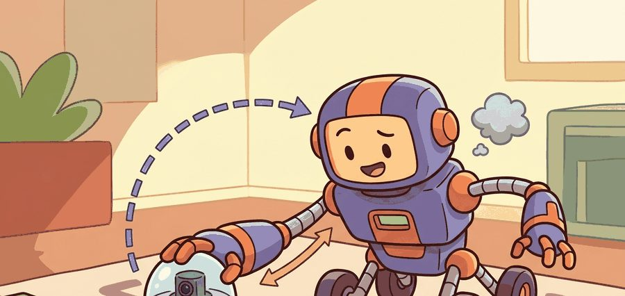
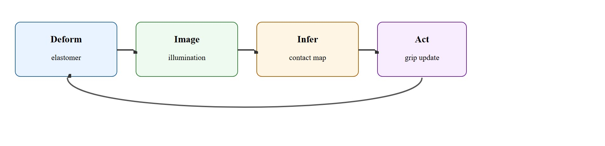
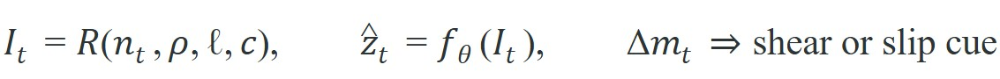

"A tactile camera turns deformation into geometry."
A Sensor Bench Engineer

This section assumes familiarity with camera-based image formation and sensor calibration concepts introduced in section 8.4, and with the manipulation control pipelines described in section 42.5. The slip-detection use case that motivates much of the hardware design is developed further in section 43.3. The ideas here are extended directly in section 44.4, where calibrated tactile images are fused with visual streams to build visuo-tactile learning policies.
A robot hand gripping a smooth glass bottle has no way to know it is slipping until the bottle hits the floor. That is the fundamental problem GelSight and DIGIT were built to solve: they press a soft, camera-backed elastomer against any surface and capture the resulting deformation as a dense, high-resolution image. The timing is right because commodity cameras and deep learning now make it practical to extract contact geometry, shear force, and incipient slip from those images in real time. Here you will trace the optical and mechanical design of these sensors, understand what the images actually encode, and build the perception pipeline that turns raw tactile frames into contact states a manipulation policy can act on immediately.
Point a camera at a slab of soft gel, press that gel against a coin, and you can read the date off the coin's face in the shadows: this is the trick that turns GelSight and DIGIT into touch sensors, encoding contact geometry, pressure patterns, and shear as ordinary images that a camera and a neural network can decode.
Because those images are the sensor's only output, everything downstream inherits their fidelity, which is why this section links tactile hardware design to perception pipelines and to the manipulation policies that consume those local contact images.
A vision-based tactile image is not just another camera frame. It is an indirect measurement of deformation, so calibration and reconstruction assumptions matter as much as the neural network that reads the image.

Optical tactile sensors observe a deformable interface under controlled lighting. Contact changes marker motion, shading, or surface normal fields, which can then be decoded into geometry, force proxies, or slip cues.
The interface is an elastomer: a silicone or polyurethane gel layer roughly 1 to 4 mm thick bonded to the inside of the fingertip shell. Without it, contact with a hard surface produces no detectable surface change. The elastomer converts the spatial distribution of contact force into a shape change the camera can image. Designers choose stiffness to balance two demands. The gel must conform to sub-millimeter surface features, yet recover its rest shape reliably between contacts so calibration stays consistent. In embodied AI this matters physically. The elastomer is the only transduction stage before the neural decoder. If it creeps, hardens with use, or delaminates from the shell, every downstream contact estimate shifts. A policy trained on fresh-sensor data then acts on corrupted inputs with no internal error signal.
A common misconception is that GelSight and DIGIT sensors work like a small camera pressed against the object, directly imaging the contacted surface. This is incorrect: the camera inside the sensor never sees the object at all. It images the inner surface of the elastomer gel as the gel deforms under contact pressure. The object's shape is only recoverable indirectly, by inverting the relationship between elastomer deformation and the photometric pattern the camera captures under controlled internal lighting. Conflating "tactile image" with "image of the object" leads to errors in calibration design, sim-to-real transfer, and policy debugging, because any factor that changes the elastomer or the internal illumination (wear, temperature, stale reference frames) corrupts the signal without touching the object itself.
Recovering object shape from a tactile image works like reading the impression left in a block of fresh dough: you never see the cookie cutter itself, only the shaped cavity it left behind, and you reconstruct the cutter's profile by reasoning about how the dough moved. The camera inside a GelSight sensor is doing exactly that, reading the distorted gel surface under controlled light and working backwards to the geometry that caused the distortion. Any factor that changes the dough, such as temperature, age, or repeated use, shifts the impression even if the cutter stays identical, which is why elastomer wear and lighting drift corrupt contact estimates before any algorithmic step is reached.
The modeling burden shifts from classical force sensing toward calibration, photometric consistency, and deformation reconstruction. That is why tactile-image interpretation benefits from both geometric and learned approaches. The processing loop in Figure 44.2.1 makes this concrete: deformation becomes an image, the image is inferred into a contact map, and the contact map drives a grip update that changes the next deformation.
A tactile sensor that has not been calibrated to the task it serves is a camera pointed at a mirror: it captures something real, but not the thing you needed to see.
Calibration decides whether the signal is usable at all, but the reason engineers pay that calibration cost in the first place is the sheer richness of the image the elastomer hands them. Why optical rather than capacitive or piezoresistive arrays? Optical sensors inherit the full resolution of the embedded camera, an advantage we call the camera-resolution free lunch. A DIGIT sensor delivers roughly 320x240 pixel contact images at 60 fps, which gives spatial resolution below 0.1 mm per pixel at the contact surface. Capacitive arrays at comparable cost typically offer 16x16 to 32x32 taxels (tactile pixels, the individual sensing elements of an array). They lose the fine-grained texture and edge detail that makes slip detection reliable. The tradeoff is bulk and the need for controlled internal illumination. But for manipulation tasks where local shape, texture discrimination, or incipient-slip sensing matters, optical sensors consistently outperform sparser array designs. This resolution gap has a concrete payoff. In practice, a slip classifier trained on DIGIT images can reach 95% accuracy with roughly 500 labeled contact frames, while the same classifier on a 16x16 taxel array typically needs 8,000 or more, because the coarser grid cannot resolve the leading-edge marker shift that precedes slip by tens of milliseconds; exact numbers vary with task and gel wear, so treat these as representative rather than guaranteed figures.

Read these three relations left to right. The first says the tactile image $I_t$ at time $t$ is a rendering $\mathcal{R}$ of the elastomer surface normals $n_t$ under fixed reflectance $\rho$, lighting $\ell$, and camera parameters $c$, which is why drift in $\ell$ or the gel corrupts $I_t$ even when contact is unchanged. The second says a learned decoder $f_\theta$ (a neural network with parameters $\theta$ learned from calibration data, not a closed-form formula) maps that image to a contact estimate $\hat z_t$ such as depth or force. The third says frame-to-frame marker motion $\Delta m_t$ (the pixel displacement of small tracked dots printed on the gel surface, used to sense sideways shear) yields a shear or slip cue, the signal exploited in the worked example below.
So far: an optical tactile sensor images elastomer deformation rather than the object itself, so the pipeline runs from raw image $I_t$, to a learned contact estimate $\hat z_t$, to a marker-motion shear or slip cue $\Delta m_t$, each stage inheriting any calibration or lighting error from the one before it.
The sensor records a contact image, maps it to deformation features or reconstructed geometry, estimates local force or slip proxies (shear here means the sideways, tangential component of contact force, as opposed to the normal force pressing straight into the surface), and then feeds those estimates into a manipulation controller or policy. Calibration drift and skin wear are part of the real system state.
# Turn marker motion into a simple slip cue.
marker_dx = [0.2, 0.5, 0.9, 1.3]
mean_shift = round(sum(marker_dx) / len(marker_dx), 2)
slip_like = mean_shift > 0.7
print({"mean_marker_shift_px": mean_shift, "slip_like": slip_like})Trace the slip cue with four tracked markers across one frame interval. Suppose the marker displacements (in pixels) measured between frame $t$ and frame $t+1$ are $0.2, 0.5, 0.9, 1.3$. Step 1, sum them: $0.2 + 0.5 + 0.9 + 1.3 = 2.9$. Step 2, divide by the count: $2.9 / 4 = 0.725$, rounded to $0.72$ px of mean shift. Step 3, compare against the threshold $0.7$: since $0.72 > 0.7$, the cue fires and slip_like = True. Now perturb the input: if the leading marker had moved only $0.7$ instead of $1.3$, the sum becomes $2.3$, the mean drops to $0.575 \to 0.58$ px, and $0.58 > 0.7$ is false, so the same threshold reports no slip. One marker near the contact patch edge flips the decision, which is exactly why a coarse $16\times16$ taxel array (too few sensing points to catch that leading-edge marker) misses the incipient-slip signal that a dense tactile image resolves.
Expected output: The expected trace flags a slip-like event because average marker motion is large. In a real system, that cue would be combined with normal-force context and controller state before acting.
Meta AI's DIGIT design files and GelSight Inc.'s reference fingertips give you the hardware, while PyTouch handles feature extraction from raw frames and TACTO renders synthetic DIGIT images inside PyBullet for sim-to-real pretraining before you touch a physical sensor. A typical loop: prototype a slip classifier on TACTO-rendered frames, validate on a real DIGIT stream, then deploy on a Robotiq 2F-85 gripper. The winning workflow still depends on clean calibration and task-specific control targets, not on the library choice.
Since the library choice matters less than clean calibration and task-linked targets, the recipe below front-loads exactly those steps.
A visually beautiful tactile image can still be useless if the calibration does not tie it to a control-relevant quantity. Pretty contact images are not the same thing as actionable touch.
When using PyTouch or a raw DIGIT stream, capture a fresh no-contact reference frame at the start of every session rather than reusing a saved baseline from a previous run. Elastomer gels creep under repeated loading, so a stale reference shifts every derived feature, including marker displacement and reconstructed depth, by a constant offset that grows invisibly over days. A simple rule: if the mean pixel intensity of your no-contact frame differs from the saved baseline by more than 3 counts in any channel, recalibrate before collecting data or running a policy.
Optical tactile sensors are especially strong for local shape discrimination, slip onset, and fine alignment tasks such as connector insertion or textured-surface following. Consider a specific case: a robot inserting a USB-C connector must detect lateral misalignment of roughly 0.3 mm before force builds enough to damage the port. A GelSight fingertip resolves contact-patch asymmetry at that scale from a single frame, allowing a corrective lateral nudge before the insertion force exceeds 2 N. A wrist force-torque sensor alone cannot localize the error to one side of the connector; the tactile image makes the correction direction unambiguous.
Meta AI's research robots use DIGIT fingertips to manipulate USB and Ethernet cables, a task where the cable is thin, deformable, and nearly invisible to a wrist camera at the moment of insertion. The DIGIT image directly resolves where the cable tip presses against the gel and whether it is sliding, letting the policy thread a connector by touch when vision is occluded by the gripper itself. This is the same dense-image advantage that lets a tactile decoder reach high slip accuracy from a few hundred frames rather than thousands.
Tactile cameras are among the few sensors where a blurry blob can be exactly what you wanted, provided you know which contact patch and shear field it represents.
Direction 1: Scalable tactile-visual pretraining. Rather than training tactile decoders from scratch per task, 2024-2025 work treats paired visual-tactile data as a pretraining corpus. UniTouch (Yang et al., 2024, CMU) trains a shared encoder on millions of paired RGB-tactile frames so that a single backbone transfers to slip detection, material classification, and force estimation without task-specific fine-tuning. This mirrors the visual foundation-model playbook and substantially reduces the per-task calibration burden.
Direction 2: High-resolution conformable skins at scale. Flat DIGIT-style pads are being replaced by skins that conform to full robot hands. The GelSight 360 (MIT CSAIL, Computer Science and Artificial Intelligence Laboratory, 2024) wraps an entire fingertip and recovers contact geometry on curved surfaces inaccessible to planar sensors. Concurrent work from the Soft Robotics Toolkit group at Harvard uses multi-camera fisheye arrangements to eliminate the occlusion zone at sensor edges, enabling contact tracking through full grasp closure.
Direction 3: Tactile-language grounding. Language-conditioned tactile policies emerged in 2025: T3 (Touch, Text, Task; Stanford + Google DeepMind, 2025) conditions a diffusion policy on both tactile images and natural-language task descriptions, letting one policy generalize across "grip tighter", "feel for the seam", and "detect the crack" without separate heads per instruction.
Open problem for a PhD student: Long-horizon elastomer drift remains unsolved. All three directions above assume a sensor whose pixel-to-geometry mapping is stable, but in practice a DIGIT skin deployed for several hours of continuous manipulation can shift its contact-force estimate by an estimated 10-15% due to gel creep and temperature (based on informal benchmarks reported in lab settings as of 2024; no peer-reviewed characterization exists at the time of writing). No published method closes the loop between manipulation policy performance and online sensor recalibration: designing a self-supervised drift monitor that triggers targeted recalibration mid-task, without interrupting the manipulation sequence, is tractable with current hardware and is an open contribution.
Could you explain what physical quantity your tactile model is estimating from the image, and which calibration assumption makes that estimate possible?
Name the image-formation and deformation path before you introduce neural decoding. The learned model inherits every assumption baked into the sensor model, so hiding those assumptions only defers the debugging.
This framing also clarifies why visuo-tactile learning is not a free fusion win. If the tactile image is poorly calibrated or heavily drifting, the combined model may learn the wrong alignment altogether.
| Tool or Library | Role in the Topic | Builder Advice |
|---|---|---|
| DIGIT | Compact optical tactile hardware | Good for portable, affordable, image-based touch sensing. |
| GelSight family | High-fidelity contact geometry | Strong when local shape and texture detail matter. |
| PyTouch | Feature extraction and learning | Use it to prototype tactile-image pipelines quickly. |
Collect a small tactile dataset with no-contact, stable-contact, and slip phases. Show how one visual feature changes across the three modes.
If predictions drift, inspect calibration, elastomer wear, and illumination before blaming the learning model. Optical tactile pipelines fail physically before they fail statistically.
Reference hardware platform for compact high-resolution optical tactile sensing.
Simulation framework for high-resolution vision-based tactile sensing.
Open ML library for tactile touch sensing and feature learning.
Vision-based tactile sensors are powerful because they transform deformation into dense contact images, but that power depends on careful calibration and task-linked interpretation.
Choose one optical tactile feature, such as marker shift or reconstructed height, and explain how it would enter a manipulation controller.
Beginner (weekend): Build a slip-detection classifier using a DIGIT sensor and PyTouch: capture no-contact, stable-contact, and sliding-contact frames, extract mean marker displacement per frame, and train a three-class logistic regression in scikit-learn. The key challenge is collecting a balanced dataset where the sliding class is genuinely distinct from stable contact, which requires a consistent sliding rig (a weighted block pulled at fixed speed across the sensor surface).
Intermediate (1 to 2 weeks): Implement a tactile-feedback grasp controller in MuJoCo using TACTO to simulate a DIGIT fingertip on a Robotiq 2F-85 gripper: render synthetic tactile images during a pick-and-place task, extract shear features with PyTouch, and close a ROS2 feedback loop that adjusts grip force when slip is detected. The key challenge is keeping the TACTO-rendered contact images close enough to real DIGIT output that a classifier trained in simulation generalizes to a physical sensor without retraining.